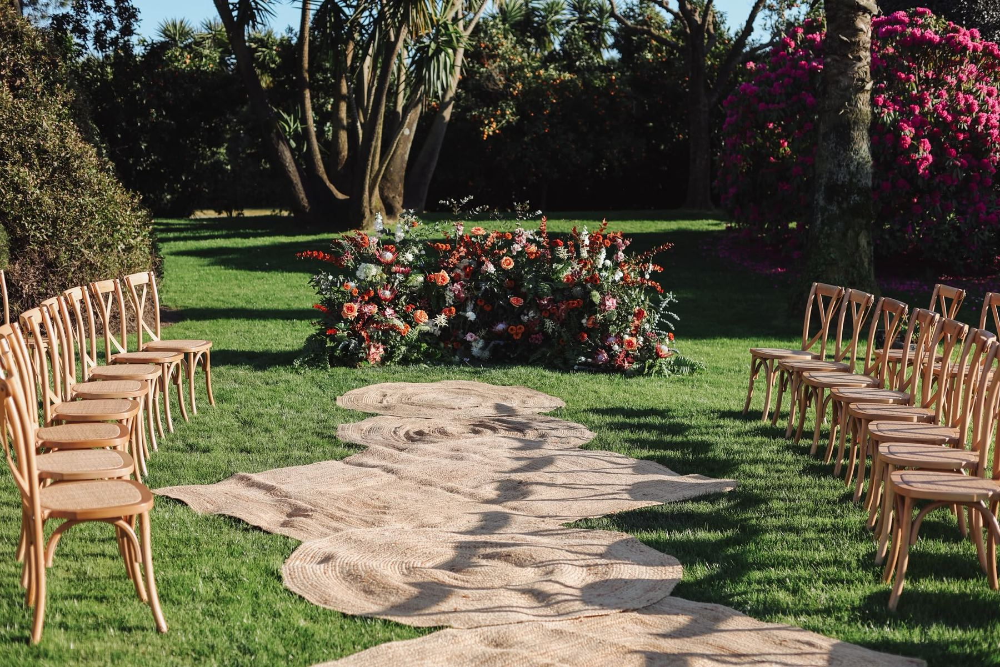
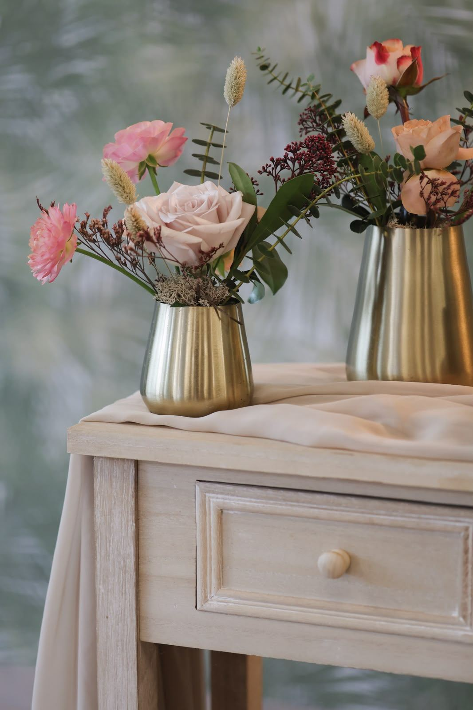

Celebrar como quem está em casa.
Jardim, salão e lounge para casamentos, batizados e festas até 500 convidados, em Gemunde, na Maia.
Agendar visitaTudo no mesmo lugar, só para si.
Rua Nova da Bajouca 572, Gemunde, Maia. Ver a vista de satélite real
Ilustração 3D baseada na planta da Quinta
Vista de cima, a sério.
Esta é a Quinta no mapa de satélite: o salão de telhado branco, o relvado e o jardim ao centro e o estacionamento à volta. Fica em Gemunde, na Maia, perto do Porto.
Como chegar
Acolhedora, descontraída e sofisticada.
Na Quinta Geraldino queremos que cada convidado se sinta em casa. Recebemos um evento de cada vez, por isso o jardim, o salão e o lounge são seus durante todo o dia.
A cozinha é da casa e o mobiliário e a decoração são pensados consigo, da primeira visita à última dança.
Do jardim ao salão, cada momento tem o seu lugar.
Um dia na Quinta
Do primeiro brinde à última dança, tudo acontece no mesmo lugar. Percorra um dia de casamento, hora a hora.
-
Chegada ao jardim
Os convidados são recebidos no jardim, entre palmeiras e recantos à sombra, enquanto se dão os últimos retoques.
-
Cerimónia ao ar livre
O corredor desenha-se no relvado, entre flores e cadeiras de madeira. O sim acontece a poucos passos da festa.
-
Cocktail
Sofás, plantas e luz natural na zona de cocktail, para conversas sem pressa enquanto se tiram as fotografias.
-
Jantar no salão
Mesas compridas ou redondas no salão interior, servidas pela cozinha da casa, com um menu escolhido consigo.
-
O bolo
Todos se juntam à volta do bolo, com a decoração pensada ao pormenor.
-
Noite dentro
Velas acesas e a pista cheia. A festa continua, só para si e para os seus convidados.
Horários ilustrativos. Cada programa é pensado à medida do seu evento.
Para cada celebração
Avaliada por mais de 400 pessoas no Google
4,4 em 5, com 432 avaliações no Google em novembro de 2026.
Réveillon na Quinta
Receba 2027 na Quinta Geraldino, com jantar, música e a casa vestida a rigor para as festas.